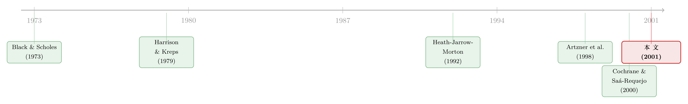

把套利偷偷放大一点点：一个连接「无套利」与「效用最大化」的定价框架
本文读的是 Carr, Geman & Madan (2001, Journal of Financial Economics)：他们把「套利」这个人人都会接受的机会，松绑成一类「可接受机会（acceptable opportunity）」——只要在一组指定的概率测度下，预期收益都不低于各自的「地板」，就值得做。靠这一步松绑，他们在经典意义上并不完全的市场里，重写了资产定价的两条基本定理，得到了唯一的定价与对冲，并给出比无套利上下界窄得多、更贴近现实的买卖价差。
1 引言：两套语言，各有各的难处
任何一个有活力的经济里，把今天确定的财富换成明天不确定的财富的机会，俯拾皆是。一个最古老的问题随之而来：这笔买卖，到底该不该做？
金融学给出过两套漂亮、却互不搭界的答案。
一套叫预期效用最大化（expected utility maximization）。只要投资者的行为符合冯·诺依曼-摩根斯坦公理，那么「接受一个机会」当且仅当它能提高她的预期效用。这套理论历史悠久、逻辑无懈可击——可它在实践中几乎没人用。原因不在公理被违反，而在它要你交代的那三样东西实在太难填：你当前的禀赋、所有资产的联合随机过程、以及你对一切财富水平的效用函数。论文作者说得很直白：连专业投资者都不愿意把这三样东西明明白白写下来；就算你从过去的决策里反推出来，反推出的偏好往往前后矛盾、对不同资产还各说各话。更糟的是，最优化的结论对这些输入极其敏感——而这些输入本身就靠不住。
另一套叫无套利定价（arbitrage pricing）。它的迷人之处恰恰在于：它根本不问你的禀赋、信念、偏好。只要一笔机会的收益能被已有可交易资产张成（spanned），它就有唯一的现值，你只需拿它和成本比一比。要是这笔机会和复制组合反向一搭，能搭出一个套利，那任何「多多益善」的投资者都该闭着眼睛接受。无套利定价把那三样难填的私人构件，干净利落地绕过去了。
这正是为什么「市场完全」（complete market）的模型在业界这么流行——市场一完全，任何机会的收益都被张成，无套利定价无往不利。Black-Scholes (1973)、Merton (1973)、HJM (Heath-Jarrow-Morton, 1992) 都是靠「连续价格过程 + 连续交易」这对组合，硬把状态空间压小、把资产空间撑大，逼出完全性。
可现实呢？现实里价格会跳、交易不连续，期权市场也远没有流动到能支撑「连续交易」。Figlewski & Green (1999) 就实证记录过：哪怕你用上最优的波动率预测，用 Black-Scholes 去对冲卖出的期权，风险依然大得吓人。市场不完全，是个绕不过去的事实。
于是问题尖锐起来：当一笔机会的收益落在张成空间之外，它既搭不出套利、又不该被一概拒绝——拒绝它，等于在一大片合理的信念与偏好下，白白放走能提高预期效用的好买卖。该用什么标准来决定「这一笔，做还是不做」？
这就是本文要补的那块空白。
2 核心一招：把「人人都接受」松绑成「很多明白人都接受」
作者的出发点，是一句几乎像废话的观察：
套利，就是一个绝对所有人都会接受的机会。
但既然偏好是连续的，那就一定存在这样一类机会：它带着温和的风险，除了最极端的风险厌恶者，几乎所有人都愿意做。Huang & Litzenberger (1988) 早就证明过：一个有正风险溢价的风险资产，除非你风险厌恶到无穷大，否则你总会投一个正的金额进去。所以，只要世上的人数有限、每个人的风险厌恶也有限，那就总存在一笔有风险、却人人都接受的投资。
真正关键的一步在于：把「套利」这个「人人接受」的概念，放大一圈，囊括进这些「几乎人人接受」的有风险机会。作者给它起名叫可接受机会（acceptable opportunity）。
怎么把「一群明白人都觉得划算」翻译成数学？作者的处理优雅得令人意外。设想这群明白人是你将来想退出时的对手方：只要他们每个人都觉得这笔交易划算，你进场时就有了多条退出的通道。而「某个人觉得划算」的一个必要条件是——在他所持的概率测度下，这笔交易的预期收益不能是负无穷。再退一步：这个下界不仅要有限，还不能为正（否则连某些真正的套利都会被它挡在门外）。
于是定义水落石出。你需要指定：
- 一组概率测度，称为测试测度（test measures）；
- 一组与之配对的非正常数，称为地板（floors）。
一笔投资被判为「可接受」，当且仅当：在每一个测试测度下，它的预期收益都至少弱大于对应的那块地板。再加两点现实考量——投资需要融资、且应放在组合里看——完整定义就成了：一笔投资可接受，当且仅当它能被融资并对冲，使得在每个测试测度下的预期收益都弱大于各自的地板。
这套标准的输入要求，恰好卡在两套老语言中间：它不要你交代禀赋、信念、效用函数（比效用最大化轻），但它要你给出测试测度与地板（比无套利重）。作者的经验是，后者比「指定一个概率测度加一个效用函数」自然得多。
3 模型：从可接受性长出两条基本定理
这是一篇有完整理论骨架的论文。我们按单期、两个日期（0 和 1）、有限状态的设定，把最关键的几步显式地走一遍。
3.1 可接受性的形式化。 设状态为 \(\omega_1, \ldots, \omega_n\)。一笔零成本机会的净收益是一个随机变量 \(X\)（即跨状态的收益向量）。给定 \(k\) 个测试测度 \(M_1, \ldots, M_k\) 和地板 \(f_1, \ldots, f_k\)，定义：
$$ X \text{ is acceptable} \iff E^{M_i}[X] \ge f_i, \quad i = 1, \ldots, k, \qquad f_i \le 0 . $$
若进一步在至少一个测度下严格大于地板，则称 \(X\) 严格可接受（strictly acceptable）。
3.2 套利只是一个特例。 把测度设成「每个状态一个」：第 \(i\) 个测度在状态 \(\omega_i\) 上放单位质量、别处放零，且地板全取零。那么「在每个这样的测度下预期收益非负」就等价于「每个状态上收益都非负」——这正是套利的定义。可见可接受机会真包含套利机会。同理，把测试测度生成的凸集，等同于「能提高决策者预期效用的投资集合」，又能复现效用最大化。这套框架，是夹在两套老语言之间的连续谱。
3.3 两种测度，各司其职。 地板严格为负的测度，作用只是防止你把一个「边际上可接受」的机会无限放大（放大到风险失控）——作者称之为压力测试测度（stress test measures）。而地板为零的测度，作者称为估值测试测度（valuation test measures）：因为只有它们，才在「给边际机会定价」时真正说了算。道理很简单——任何负地板带来的约束，都能靠把组合等比例缩小而被冲淡，唯独零地板的约束缩不掉。
3.4 第一基本定理的对应物。 Harrison & Kreps (1979) 的第一基本定理说：若流动资产的定价不存在「免费午餐」，则存在一个正的状态定价函数——一组求和为一的正权重，与每个资产的跨状态收益做内积，得到该资产的远期市价。本文把「无套利」替换成「在流动资产之间不存在严格可接受机会」，于是状态被估值测度替换，得到一个漂亮的对应：
这里 \(\pi_j\) 是资产 \(j\) 的远期市价，\(X_j\) 是它的收益向量。换句话说：第一基本定理把定价问题约化成「给每个状态挑一组正权重」；而本文把它约化成「给每个估值测度挑一组正权重」。每个 \(w_i\) 还有个干净的金融解读——它就是「一个在测度 \(M_i\) 下预期收益为一美元、在别的估值测度下预期收益为零」的组合的远期价格，即一张定义在估值测度结果空间（而非原状态空间）上的 Arrow-Debreu 证券。
这一步反转的威力在于：状态数往往远多于独立的估值测度数。当估值测度数 \(k\) 远小于状态数 \(n\) 时，新证券「与市价相容」的取值区间会收得更紧——毕竟「禁止可接受机会」比「禁止套利」是更强的约束，更紧的价格区间是意料之中。
3.5 第二基本定理的对应物：唯一定价与对冲。 Harrison & Kreps (1979) 的第二基本定理说：当（非冗余）资产数等于状态数，市场完全，状态定价函数唯一。本文给出对应的「可接受完全（acceptably complete）」概念：当非冗余资产数弱大于独立估值测度数时，那组与市价相容的权重 \(w\) 被唯一确定。于是——
$$ m_{\text{nr}} \ge k_{\text{ind}} \;\Longrightarrow\; w \text{ unique} \;\Longrightarrow\; \text{unique valuation and hedging.} $$
最有意思的是中间地带：当非冗余资产数 \(\ge\) 独立估值测度数，却 $<$ 状态数时，市场在经典意义上仍然不完全，但你照样能唯一地定价和对冲现金流。这个看似矛盾的结论，根子在于——本文的对冲并不消灭全部风险，它只要求残余风险构成一个可接受机会。把「完全对冲」松绑成「可接受对冲」，唯一性就在不完全的市场里被救了回来。
（关于「在不完全市场里给期权定价、且每张期权背后都站着一类投资者」的另一种思路，可参见《每一张期权背后，站着一个怎样的投资者？》。）
4 一个三状态的小例子，把抽象一次说穿
论文第 2 节的第一个例子，干净得可以抄进教科书。
考虑单期经济、三个状态 \(\omega_1, \omega_2, \omega_3\)，两个资产：一份单位债券，和一只跨状态收益为 $[3, 1, 0]$ 的股票。两个资产初始各值一美元、且都靠借钱融资。融资后的净收益矩阵为：债券 $[0,0,0]$，股票 $[2, 0, -1]$。三个状态、两个机会，市场显然不完全；而且可以验证，这个经济没有套利。
接着引入两个估值测度（地板都为零）：
- 测度 1：$[1/3, 1/3, 1/3]$；
- 测度 2：$[0, 0, 1]$（实际是在第三状态上放权重）。
测度 2 逼着「可接受」的收益在第三状态上必须非负。检验一下：融资后债券在两测度下预期都是 \(0\)，不严格可接受；融资后股票在测度 1 下是 $1/3$、在测度 2 下是 $-1$，也不严格可接受。任取 \(l\) 股、\(k\) 份债券的组合，在测度 1 下预期为 \(l/3\)、在测度 2 下为 \(-l\)——两者必有一负。于是这个经济里不存在可接受机会。
正如「无套利 ⟺ 没有零成本组合落在三状态张成空间的正卦限」，「无可接受机会 ⟺ 没有零成本组合的预期收益落在两个估值测度张成空间的正卦限」。本文的基本定理于是给出一对求和为一的权重，把融资后的股票重新定价：
$$ \tfrac{1}{3}\, w + (1 - w)(-1) = 0 . $$
解得 \(w = 3/4\)，权重向量 \([3/4,\ 1/4]\)。要给一份执行价为 2 的看涨期权定价，注意它的收益是 $[1, 0, 0]$，在测度 1 下预期 $1/3$、在测度 2 下预期 \(0\)，于是期权价值为
$$ \tfrac{3}{4}\cdot\tfrac{1}{3} + \tfrac{1}{4}\cdot 0 = \tfrac{1}{4}. $$
市场明明不完全，期权却被唯一定了价——这就是「可接受完全」在最小例子上的现身。论文第二个例子（五状态、三资产：债券、股票、平价跨式）则进一步示范：可以拿三位「有合理持仓、合理偏好、合理先验」的投资者的边际效用向量，归一化后当作三个估值测度。比如他们都用 \(-(W/100)^{-4}\) 的效用（相对风险厌恶系数为 5），各自的状态或有边际效用列向量就天然为正、可归一——技术上用了效用最大化的零件，却不必把它当成必需品。
5 真正落地的地方：更窄、更现实的买卖价差
理论再漂亮，做市商关心的是报价。论文第 7 节回到这个最实在的问题。
在不完全市场里，无套利定价能给衍生品报一个买卖价差：最小卖价是「超复制（super-replicate）该收益的流动资产组合的最小初始成本」，最大买价是「次复制（sub-replicate）该收益、做空流动资产能拿到的最大初始流入」。问题是，这种由超/次复制撑出来的价差，往往宽得离谱，和现实里的报价对不上。
本文的推广只动了一个词：把「收益减去对冲」之差的非负性，换成这个差的可接受性。就这一处松绑，价差就显著收窄，更贴近实际观察到的买卖价差。而且模型还自带一个很对胃口的性质——价差随交易规模增大而扩大，这与做市商「量越大、风险越大、要价越宽」的实践完全吻合（Figlewski (1989) 早就指出，现实里的价差反映的正是做市商愿意承担可控风险的意愿）。
这恰好把「无套利上下界」和「单一风险中性测度定价」连成一条线：前者给出宽得没用的区间，后者给出一个没有缓冲的点。可接受性框架住在两者之间——它给出一个有宽度、但不离谱的区间，宽度还会随你做多大而变。
（关于价差从另一个角度——「会动的供给曲线」——如何被撑开，可参见《买高卖低的那道楔子》；关于无套利定价里被忽略的「泡沫」一项，可参见《一道方程，几个价格》。）
6 文献脉络
这条线的源头，是完全市场那套近乎完美的机器。Black & Scholes (1973) 和 Merton (1973) 用连续交易把期权定价做成了无套利的典范；Harrison & Kreps (1979) 则把整套逻辑抽象为鞅与无套利，立下两条基本定理——这是本文要去重写的两块基石。Heath, Jarrow & Morton (1992) 把它推广到利率期限结构，仍然活在完全市场的假设里。
接着，一个自然的问题是：市场不完全时怎么办？文献分出两支。一支给「可接受性」找标准：Cochrane & Saá-Requejo (2000)、Ledoit (1995)、Bernardo & Ledoit (2000) 用夏普比率来界定哪些有风险的投资值得做（即「好交易边界」good-deal bounds），Bernardo & Ledoit (1999) 则改用「收益/损失比」。另一支从无套利测度集中挑一个来用：Rubinstein (1994) 挑「离对数正态先验最近」的风险中性密度，Buchen & Kelly (1996)、Stutzer (1996)、Avellaneda et al. (1997) 最小化相对熵，Hull & White (1990)、Heston (1993)、Bates (1996)、Madan, Carr & Chang (1998) 则直接设定一族灵活的风险中性过程、再用期权价格估参。

本文恰好坐在这两支之间、又自成一格。它与 Artzner, Delbaen, Eber & Heath (1998, 1999) 的一致风险测度（coherent measures of risk）是同一时期、互为表里的思想——「一组测试测度 + 接受集」正是一致风险测度的对偶刻画。但本文的独到之处，是把这套「接受集」语言接回了 Harrison-Kreps 的两条基本定理，从而在不完全市场里既定价、又对冲、还报价差。它不是又一个「挑测度」的技巧，而是把「无套利」这一概念本身，松绑成了一个连续谱。
7 评论与延伸（Q&A + 研究方向）
(a) 几个可能的疑问
Q：「可接受机会」和「好交易边界」（good-deal bounds）到底差在哪？
两者都想把「无套利」放大一圈、再砍掉「好到不像话」的交易。但 Cochrane-Saá-Requejo 用夏普比率上限来砍，本质是对随机贴现因子的方差设界，需要你指定主观概率；本文用一组测试测度 + 非正地板来砍，不需要单一主观概率，且能直接接回两条基本定理、给出唯一对冲。可以说前者是「单一约束」，后者是「一束线性约束」，后者因此天然兼容多个互相竞争的视角。
Q：在经典意义上不完全的市场里得到「唯一」价格，这不矛盾吗？
不矛盾，因为「唯一」的代价被悄悄换掉了。经典完全市场的唯一性来自「对冲消灭全部风险」；本文的唯一性来自「对冲只需把残余风险压成可接受」。当非冗余资产数 \(\ge\) 独立估值测度数（哪怕仍 $<$ 状态数），相容的测度权重就被钉死，于是定价唯一。换言之，唯一性不是凭空多出来的，而是你额外注入了估值测度这组先验换来的。
Q：估值测度该从哪儿来？会不会换一组测度就换一个价？
会。测度的选取是这套框架的「输入」，正如效用函数是效用最大化的输入。论文示范了一种生成法——用若干位「合理投资者」的边际效用向量做测度——但反复强调这只是一种技巧、并非必需。诚实地说，这正是它的阿喀琉斯之踵：结论对测度集的依赖，类似无套利定价对「状态空间」设定的依赖，只是位置更靠前、更显眼。
Q：压力测试测度和估值测度，为什么地位如此不对称？
因为负地板的约束能被「等比例缩小组合」冲淡，零地板的约束冲不掉。于是判断「市场是否有效（有没有白拿的可接受机会）」「边际机会值多少钱」时，只有零地板的估值测度说了算；负地板的压力测度退居幕后，唯一作用是拦住「把边际机会无限加杠杆」。这是个很巧的设计——把「定价」和「风控」用地板的正负干净地分了工。
Q：为什么说它「夹在效用最大化和无套利之间」，而不是某一端的特例？
因为两端都能作为极限被复现：测度退化成「每状态一个、地板全零」时，可接受性 = 无套利；测度凸集等同于「提高某决策者预期效用的集合」时，可接受性 = 效用最大化。它真的是一条连续谱上的中间点，且这个中点可解读为「在决策者当前禀赋处，内生地确定了一条无差异曲线」——而无须像效用理论那样指定所有财富水平上的无差异曲线。
Q：这套框架对买卖价差的预测，可证伪吗？
部分可以。它给出两个方向性预测：价差比超/次复制窄、且随交易规模递增。后者尤其干净，可以拿做市商逐笔报价数据去检验「价差-规模」斜率是否为正、量级是否与可接受性框架的校准一致。难点在于价差还混入存货、信息不对称等成分，需要把它们剥离。
(b) 几个可能的研究问题与提案
1. 把「可接受性」搬到公司债的买卖价差上。
【经济故事】公司债是出了名的不完全、且分层流动——同一发行人不同券、不同规模的交易，价差天差地别。可接受性框架预测「价差随规模递增」，这与公司债大宗交易的现实高度契合。【可行性】中。需要 TRACE 逐笔成交 + 交易商身份（如 enhanced TRACE / 监管版），用流动券构造估值测度，检验衍生/非标券的隐含价差是否落在可接受区间内、斜率是否为正。识别上要小心把存货成本与可接受性溢价分开。
2. 外资持有人作为「估值测度」的来源。
【经济故事】本文的估值测度可由不同投资者的边际效用生成。当一国债市的边际定价者从本地机构切换到外资，相当于换了一组估值测度，可接受价格区间应随之平移、收窄或扩张。【可行性】中偏低。需要持有人结构面板（如各国央行/托管数据）+ 一个外资份额的外生冲击（指数纳入、资本账户开放）。把「测度切换」做成可检验的预测，是最难的一环，更可能停在「定性方向 + 校准」层面。
3. 用可接受性给「流动性溢价」一个结构化的上下界。
【经济故事】危机中公司债买卖价差暴走，无套利上下界宽到失去意义。可接受性框架能给出一个有宽度、随规模递增的区间，或许能把「流动性那一块」从信用利差里更干净地框出来。【可行性】中。数据用危机窗口的 TRACE；可与已有的流动性度量（如 Roll、Amihud）对照。识别难点是危机期估值测度本身在动。
4. 把单期框架推到多期 / 连续时间，并做实证校准。
【经济故事】论文第 6 节已在连续状态对数正态设定里走了一步，但完整的多期可接受性定价（测度如何随时间更新、地板如何设定）仍是开放的。【可行性】低到中。理论上可借鉴一致风险测度的动态一致性（time-consistency）文献，但要做到可估、可对冲、可检验，工程量大。更像一篇方法论论文而非实证论文。
5. 测度集的「稳健性」诊断。
【经济故事】既然结论依赖测度集，那一个自然的练习是：把测度集做扰动，看定价区间有多敏感——这恰好回应了本文对效用最大化「对输入过敏」的批评，反过来检验自己。【可行性】高。纯数值实验即可：在小型经济里系统地扰动测度与地板，画出价格区间的敏感性曲面。是检验这套框架「实用稳健性」的低成本入口。
8 参考文献与我的判断
我的总评是：这是一篇概念贡献远大于技术难度的论文。它真正值钱的地方，不是某个公式，而是把「套利」这个我们用了几十年的二元概念（要么是、要么不是），改造成一个连续、可调、且两端都能复现经典的谱系。它一手接住了无套利定价的「不问私人构件」的优点，一手又获得了「能对有风险的机会下判断」的能力，还顺手把买卖价差从「宽到没用」拉回到「有宽度但合理」。对做市与风控的从业者，这套语言比效用函数自然得多。
对识别（这里是「框架可信度」）的担忧有二。其一，测度集是外生输入，结论对它的依赖，本质上和无套利定价对状态空间设定的依赖同源，只是更显眼、更难自证——论文用「合理投资者的边际效用」来生成测度，终究是把效用最大化的难题往前挪了一格，而非消除。其二，理论主体停在单期、有限状态；虽有连续对数正态一节，但动态一致性、可估性、与真实期权面的拟合，文中都未充分展开，留给后人的工程量不小。
后续我最想看到的，是把这套「可接受价差随规模递增」的预测，拖到真实的逐笔报价数据上做一次硬碰硬的检验——尤其在公司债与信用衍生品这种「天生不完全、天生分层流动」的市场里。如果价差的「规模斜率」真的能被可接受性框架校准出来，那它就从一个优雅的理论，变成一把能用的尺子。
参考文献
- Artzner, P., Delbaen, F., Eber, J., Heath, D. (1998). Definition of coherent measures of risk. Mathematical Finance 9(3), 203–228.
- Bernardo, A., Ledoit, O. (2000). Gain, loss and asset pricing. Journal of Political Economy 108, 144–172.
- Black, F., Scholes, M. (1973). The pricing of options and corporate liabilities. Journal of Political Economy 81, 637–654.
- Carr, P., Geman, H., Madan, D. B. (2001). Pricing and hedging in incomplete markets. Journal of Financial Economics 62(1), 131–167.
- Cochrane, J., Saá-Requejo, J. (2000). Good-deal asset price bounds in incomplete markets. Journal of Political Economy 108, 79–119.
- Figlewski, S. (1989). Options arbitrage in imperfect markets. Journal of Finance 44(5), 1289–1312.
- Figlewski, S., Green, T. (1999). Market risk and model risk for a financial institution writing options. Journal of Finance 54, 1465–1499.
- Harrison, J., Kreps, D. (1979). Martingales and arbitrage in multiperiod securities markets. Journal of Economic Theory 20, 381–408.
- Heath, D., Jarrow, R., Morton, A. (1992). Bond pricing and the term structure of interest rates: a new methodology for contingent claim valuation. Econometrica 60, 77–105.
- Huang, C., Litzenberger, R. (1988). Foundations for Financial Economics. North-Holland, New York.
- Madan, D., Carr, P., Chang, E. (1998). The variance gamma process and option pricing. European Finance Review 2, 79–105.
- Merton, R. (1973). Theory of rational option pricing. Bell Journal of Economics and Management Science 4, 141–183.
- Rubinstein, M. (1994). Implied binomial trees. Journal of Finance 49, 771–818.